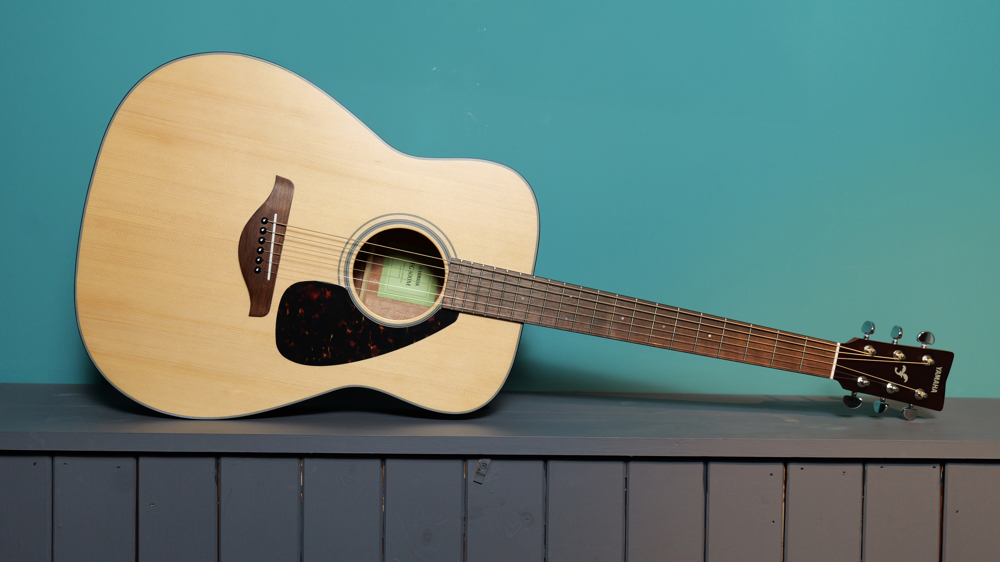
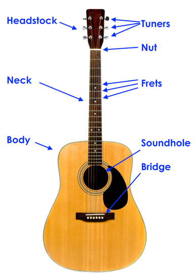

An acoustic guitar is a string instrument, which is to say that it produces sound through the vibration of strings tuned to a certain pitch. The strings of the guitar are usually plucked with a pick or fingers to get them to vibrate, and this can be done in a variety of ways including fingerstyle, flatpicking, and strumming. The body of the acoustic guitar is wooden and hollow which means that when the strings vibrate, these vibrations resonate through the top (or 'soundboard') which in turn creates an acoustically amplified sound. Acoustic guitars are used in a wide variety of music genres, including pop, rock, classical, jazz, folk, country and bluegrass. Depending on your own personal musical tastes, you can learn to play any of these style of music and more on your acoustic guitar. The type of music you are interested in might even change over time as you learn to play and understand music on a different level!
Although classical guitars long ago used catgut strings made from sheep intestines before switching to nylon strings, this guitar instead used steel strings. The strings were wound using a pegbox-just like a classical guitar. Dynamic guitars were known for producing bigger sound since they used steel strings instead of nylon strings. The shape and thickness of the body was subsequently modified to produce an even bigger sound-one more step closer to perfecting the acoustic guitar.
